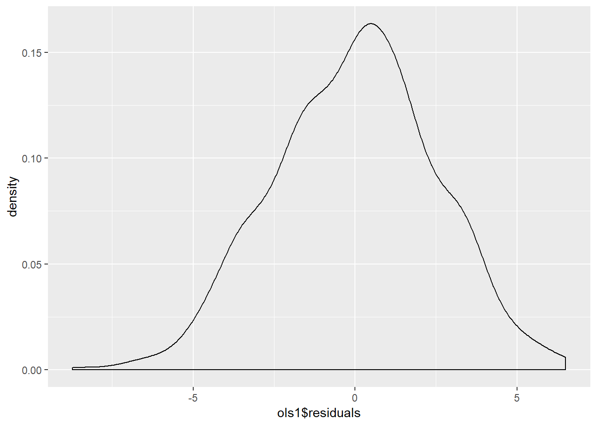

7 The Logic of Ordinary Least Squares Estimation
This chapter begins the discussion of ordinary least squares (OLS) regression. OLS is the “workhorse” of empirical social science and is a critical tool in hypothesis testing and theory building. This chapter builds on the discussion in Chapter 6 by showing how OLS regression is used to estimate relationships between and among variables.
7.1 Theoretical Models
Models, as discussed earlier, are an essential component in theory building. They simplify theoretical concepts, provide a precise way to evaluate relationships between variables, and serve as a vehicle for hypothesis testing. As discussed in Chapter 1, one of the central features of a theoretical model is the presumption of causality, and causality is based on three factors: time ordering (observational or theoretical), co-variation, and non-spuriousness. Of these three assumptions, co-variation is the one analyzed using OLS. The often repeated adage, ``correlation is not causation’’ is key. Causation is driven by theory, but co-variation is the critical part of empirical hypothesis testing.
When describing relationships, it is important to distinguish between those that are deterministic versus stochastic. Deterministic relationships are “fully determined” such that, knowing the values of the independent variable, you can perfectly explain (or predict) the value of the dependent variable. Philosophers of Old (like Kant) imagined the universe to be like a massive and complex clock which, once wound up and set ticking, would permit perfect prediction of the future if you had all the information on the starting conditions. There is no “error” in the prediction. Stochastic relationships, on the other hand, include an irreducible random component, such that the independent variables permit only a partial prediction of the dependent variable. But that stochastic (or random) component of the variation in the dependent variable has a probability distribution that can be analyzed statistically.
7.1.1 Deterministic Linear Model
The deterministic linear model serves as the basis for evaluating theoretical models. It is expressed as:
\[\begin{equation} Y_{i} = \alpha + \beta X_{i} \tag{7.1} \end{equation}\]A deterministic model is systematic and contains no error, therefore \(Y\) is perfectly predicted by \(X\). This is illustrated in Figure (fig:dols). \(\alpha\) and \(\beta\) are the model parameters, and are constant terms. \(\beta\) is the slope; the change in \(Y\) over the change in \(X\). \(\alpha\) is the intercept; the value of \(Y\) when \(X\) is zero.
Figure 7.1: Deterministic Model
Given that in social science we rarely work with deterministic models, nearly all models contain a stochastic, or random, component.
7.1.2 Stochastic Linear Model
The stochastic, or statistical, linear model contains a systematic component, \(Y = \alpha+\beta\), and a stochastic component called the error term. The error term is the difference between the expected value of \(Y_i\) and the observed value of \(Y_i\); \(Y_i-\mu\). This model is expressed as:
\[\begin{equation} Y_{i} = \alpha + \beta X_{i} + \epsilon_i \tag{7.2} \end{equation}\]where \(\epsilon_i\) is the error term. In the deterministic model, each value of \(Y\) fits along the regression line, however in a stochastic model the expected value of \(Y\) is conditioned by the values of \(X\). This is illustrated in Figure 7.2.
Figure 7.2: Stochastic Linear Model
Figure 7.2 shows the conditional population distributions of \(Y\) for several values of \(X, p(Y|X)\). The conditional means of \(Y\) given \(X\) are denoted \(\mu\).
\[\begin{equation} \mu_{i} \equiv E(Y_{i}) \equiv E(Y|X_{i})=\alpha+\beta X_{i} \tag{7.3} \end{equation}\]where - \(\alpha = E(Y) \equiv \mu\) when \(X=0\) - Each 1 unit increase in \(X\) increases \(E(Y)\) by \(\beta\)
However, in the stochastic linear model variation in \(Y\) is caused by more than \(X\), it is also caused by the error term \(\epsilon\). The error term is expressed as:
\[\begin{align*} \epsilon_i &= Y_{i}-E(Y_{i}) \\ &= Y_{i}-(\alpha+\beta X_{i}) \\ &= Y_{i}-\alpha-\beta X_{i} \end{align*}\] Therefore; \[\begin{align*} Y_{i} &= E(Y_{i})+\epsilon \\ &= \alpha+\beta X_{i}+\epsilon_{i} \end{align*}\]We make several important assumptions about the error term that are discussed in the next section.
7.1.3 Assumptions about the Error Term
There are three key assumptions about the error term; a) errors have identical distributions, b) errors are independent, and c) errors are normally distributed.14
Error Assumptions
Errors have identical distributions
\(E(\epsilon^{2}_{i}) = \sigma^2_{\epsilon}\)
Errors are independent of \(X\) and other \(\epsilon_{i}\)
\(E(\epsilon_{i}) \equiv E(\epsilon|x_{i}) = 0\)
and
\(E(\epsilon_{i}) \neq E(\epsilon_{j})\) for \(i \neq j\)
Errors are normally distributed
\(\epsilon_{i} \sim N(0,\sigma^2_{\epsilon})\)
Taken together these assumption mean that the error term has a normal, independent, and identical distribution (normal i.i.d.). However, we don’t know if, in any particular case, these assumptions are met. Therefore we must estimate a linear model.
7.2 Estimating Linear Models
With stochastic models we don’t know if the error assumptions are met, nor do we know the values of \(\alpha\) and \(\beta\); therefore we must estimate them, as denoted by a hat (e.g., \(\hat{\alpha}\) is the estimate for \(\alpha\)). The stochastic model as shown in Equation (7.4) is estimated as:
\[\begin{equation} Y_{i} = \hat{\alpha} + \hat{\beta} X_{i}+ \epsilon_{i} \tag{7.4} \end{equation}\]where \(\epsilon_i\) is the residual term, or the estimated error term. Since no line can perfectly pass through all the data points, we introduce a residual, \(\epsilon\), into the regression equation. Note that the predicted value of \(Y\) is denoted \(\hat{Y}\) (\(y\)-hat).
\[\begin{align*} Y_{i} &= \hat{\alpha}+\hat{\beta}X_{i}+\epsilon_{i} \\ &= \hat{Y_{i}} + \epsilon_{i} \\ \epsilon_{i} &= Y_i-\hat{Y_{i}} \\ &= Y_i-\hat{\alpha}-\hat{\beta}X_i \end{align*}\]7.2.1 Residuals
Residuals measure prediction errors of how far observation \(Y_{i}\) is from predicted \(\hat{Y_{i}}\). This is shown in Figure 7.3.
Figure 7.3: Residuals: Statistical Forensics
The residual term contains the accumulation (sum) of errors that can result from measurement issues, modeling problems, and irreducible randomness. Ideally, the residual term contains lots of small and independent influences that result in an overall random quality of the distribution of the errors. When that distribution is not random – that is, when the distribution of error has some systematic quality – the estimates of \(\hat{\alpha}\) and \(\hat{\beta}\) may be biased. Thus, when we evaluate our models we will focus on the shape of the distribution of our errors.
What’s in \(\epsilon\)?
Measurement Error
- Imperfect operationalizations
- Imperfect measure application
Modeling Error
- Modeling error/mis-specification
- Missing model explanation
- Incorrect assumptions about associations
- Incorrect assumptions about distributions
Stochastic “noise”
- Unpredictable variability in the dependent variable
The goal of regression analysis is to minimize the error associated with the model estimates. As noted, the residual term is the estimated error, or overall ``miss" (e.g., \(Y_{i}-\hat{Y_{i}}\)). Specifically the goal is to minimize the sum of the squared errors, \(\sum \epsilon^{2}\). Therefore, we need to find the values of \(\hat{\alpha}\) and \(\hat{\beta}\) that minimize \(\sum \epsilon^{2}\).
Note that for a fixed set of data {\(\hat{\alpha}\),\(\hat{\alpha}\)}, each possible choice of values for \(\hat{\alpha}\) and \(\hat{\beta}\) corresponds to a specific residual sum of squares, \(\sum \epsilon^{2}\). This can be expressed by the following functional form:
\[\begin{equation} S(\hat{\alpha},\hat{\beta})=\sum_{i=1}^{n} \epsilon^{2}_{i}=\sum (Y_{i}-\hat{Y_{i}})^{2}=\sum (Y_{i}-\hat{\alpha}-\hat{\beta}X_{i})^{2} \tag{7.5} \end{equation}\]Minimizing this function requires specifying estimators for \(\hat{\alpha}\) and \(\hat{\beta}\) such that \(S(\hat{\alpha},\hat{\beta})=\sum \epsilon^{2}\) is at the lowest possible value. Finding this minimum value requires the use of calculus, which will be discussed in the next chapter. Before that we walk through a quick example of simple regression.
7.3 An Example of Simple Regression
The following example uses a measure of peoples’ political ideology to predict their perceptions of the risks posed by global climate change. OLS regression can be done using the lm function in R. For this example, we are again using the class data set.
ols1 <- lm(ds$glbcc_risk~ds$ideol)
summary(ols1)##
## Call:
## lm(formula = ds$glbcc_risk ~ ds$ideol)
##
## Residuals:
## Min 1Q Median 3Q Max
## -8.726 -1.633 0.274 1.459 6.506
##
## Coefficients:
## Estimate Std. Error t value Pr(>|t|)
## (Intercept) 10.81866 0.14189 76.25 <0.0000000000000002 ***
## ds$ideol -1.04635 0.02856 -36.63 <0.0000000000000002 ***
## ---
## Signif. codes: 0 '***' 0.001 '**' 0.01 '*' 0.05 '.' 0.1 ' ' 1
##
## Residual standard error: 2.479 on 2511 degrees of freedom
## (34 observations deleted due to missingness)
## Multiple R-squared: 0.3483, Adjusted R-squared: 0.348
## F-statistic: 1342 on 1 and 2511 DF, p-value: < 0.00000000000000022The output in R provides a quite a lot of information about the relationship between the measures of ideology and perceived risks of climate change. It provides an overview of the distribution of the residuals; the estimated coefficients for \(\hat{\alpha}\) and \(\hat{\beta}\); the results of hypothesis tests; and overall measures of model ``fit" – all of which we will discuss in detail in later chapters. For now, note that the estimated \(B\) for ideology is negative, which indicates that as the value for ideology increases—in our data this means more conservative—the perceived risk of climate change decreases. Specifically, for each one unit increase in the ideology scale, perceived climate change risk decreases by -1.0463463.
We can also examine the distribution of the residuals, using a histogram and a density curve. This is shown in Figure 7.4 and Figure ??. Note that we will discuss residual diagnostics in detail in future chapters.
data.frame(ols1$residuals) %>%
ggplot(aes(ols1$residuals)) +
geom_histogram(bins = 16)Figure 7.4: Residuals of Simple Regression: Histogram
data.frame(ols1$residuals) %>%
ggplot(aes(ols1$residuals)) +
geom_density(adjust = 1.5) 
For purposes of this Chapter, be sure that you can run the basic bivariate OLS regression model in R. If you can – congratulations! If not, try again. And again. And again…
Actually, we assume only that the means of the errors drawn from repeated samples of observations will be normally distributed – but we will deal with that wrinkle later on.↩